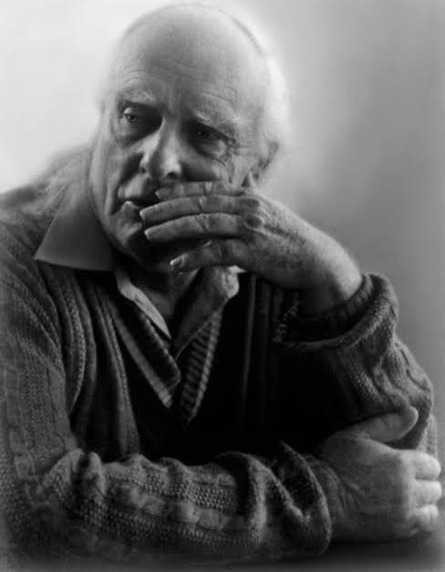
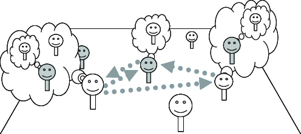
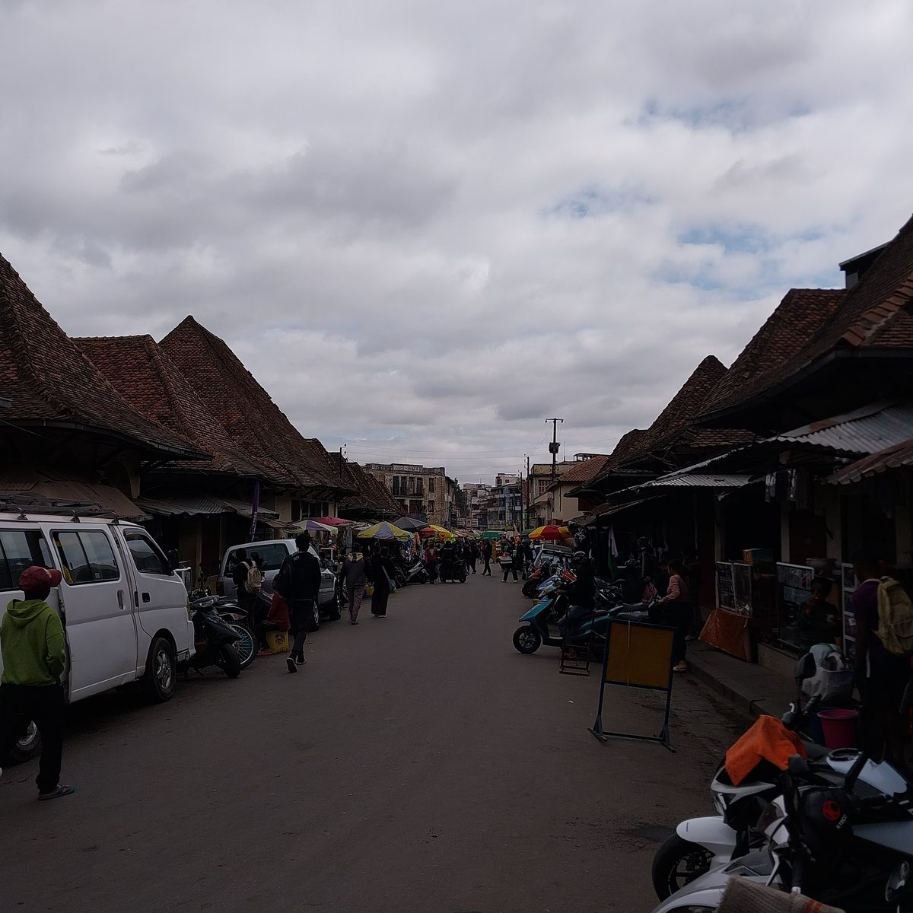

“

Trinity College Dublin
Coláiste na Tríonóide, Baile Átha Cliath
The University of Dublin
LI7862 · Linguistic Pragmatics
Week 3
Implicature
Dr. Thomas Stephen
School of Linguistic, Speech & Communication Sciences
Semester 1 · 2026
This week
How do we mean more than we say?
Last week. Saying as doing. Felicity conditions. Force and content, and the indirect route from one act to another.
This week. What is said and what is implicated. The Cooperative Principle and the maxims. Scales, alternatives, and the derivation of not all from some.
Figures: Grice · Horn · Traugott · Data: Irish English grand and maybe · jokes · Bronston v. United States · Malagasy · language models
Today
Empirical
- Said and meant
- Generalised and particularised
- Generalised implicatures
- Diagnostics
Historical
- Grice's problem
- Paul Grice
- Meaning (1957)
- Recursive mind reading
- The Cooperative Principle
- Rational cooperation
- Grice's taxonomy
- Conventional and conversational
Formal
- Calculability
- Implicature by maxim
- Scales and alternatives
- The derivation
- Weak and strong
- Competence
- Grand and maybe
- Not observing a maxim
Applied
- Humour
- Language change
- Court
- Universality
- Machines
- Noveck (2001)
This week
Readings
Grice, H. P. (1975). Logic and conversation. In P. Cole & J. Morgan (eds), Syntax and Semantics 3: Speech Acts. Reprinted in Studies in the Way of Words (1989). Primary
Grundy, P. (2008). Doing Pragmatics, 3rd ed., ch. 5 “Implicit meaning”. Textbook
Levinson, S. C. (1983). Pragmatics, ch. 3 “Conversational implicature”. Textbook
Geurts, B. (2010). Quantity Implicatures, ch. 1. · Chapman, S. (2005). Paul Grice: Philosopher and Linguist. Optional
I
Empirical
STRAND 01 / 04 · LI7862 · Week 3
What is said and what is meant
Literal meaning and speaker meaning
(1) A
Are you coming to the meeting?
B
I have marking to do.
Empirical
Said and meant
What is said. B has marking to do. Nothing about the meeting. True or false on its own.
What is implicated. B is not coming. Every hearer gets it; no word of the sentence carries it.
Sentence meaning. What the expression contributes by linguistic convention.
Speaker meaning. What a speaker communicates in context by choosing that expression.
Grice (1975); Levinson (1983), ch. 3. Example (1): constructed.
(2)
A: Did you read the paper? B: I read the abstract.
(3)
A: How was the talk? B: The slides were beautifully formatted.
(4)
A: Do you like my new haircut? B: It's certainly distinctive.
(5)
A: Is Sam a good person to have on the committee? B: Sam is always on time.
(6)
A: Where's Alex? B: There's a light on in Alex's office.
Empirical
Generalised and particularised
Generalised
No special knowledge of the context is needed to work out the extra meaning. The form of words carries it, unless something special in the context blocks it.
Particularised
The extra meaning depends on assumptions local to this context. Change the context and it goes.
(7)Doobie: Did you invite Bella and Cathy? Mary: I invited Bella.generalised: not Cathy. Any context will do
(8)Rick: Hey, coming to the wild party tonight? Tom: My parents are visiting.particularised: no. Only if Tom has to stay home while his parents visit
(9)A: I am out of petrol. B: There is a garage round the corner.particularised: the garage is open, and sells petrol. Grice (1975)
Yule, G. (1996). Pragmatics, ch. 5. · Grice, H. P. (1975). Logic and conversation.
Empirical
Generalised implicatures
UtteranceConveys
(10) Some of the students passed.
not all scalar ⟨all, some⟩
(11) Anna or Sam will chair.
not both scalar ⟨and, or⟩
(12) The soup is warm.
not hot scalar ⟨hot, warm⟩
(13) It is possible that she will come.
not certain scalar ⟨certain, possible⟩
(14) I believe she is in.
I don't know she is in scalar ⟨know, believe⟩
(15) X is meeting a woman this evening.
not his wife, mother or sister indefinite; Grice (1975)
(16) X went into a house yesterday.
not his own house indefinite; Grice (1975)
(17) She turned the key and the engine started.
then, and because of it and; Levinson (2000)
Scales: Horn (1972), Levinson (1983: ch. 3). Indefinites: Grice (1975). And: Levinson (2000).
Empirical
Diagnostics
(18)Some of the students passed. In fact, all of them did.fine
(19)#Exactly two students passed. In fact, three did.contradiction: exactly two entails not three
(20)I read the abstract. I didn't have time for the whole paper.fine, and no repetition
Cancellable
The inference can be withdrawn without contradiction, as in (18). An entailment cannot, as in (19).
Reinforceable
The inference can be made explicit without redundancy, as in (20).
Non-detachable
Any way of saying the same thing carries it. Some, a few, part of: still not all.
Calculable
It can be worked out from what was said plus assumptions about the speaker.
Grice (1975): cancellability, non-detachability, calculability. Sadock (1978): reinforceability. Examples constructed.
II
Historical
STRAND 02 / 04 · LI7862 · Week 3
Grice
The meaning of meaning
Historical
Grice's problem
Do English and, or, if mean what \(\wedge\), \(\vee\), \(\rightarrow\) mean?
(21)She got married and had a baby. · She had a baby and got married.\(p \wedge q\) and \(q \wedge p\) are equivalent; the two sentences are not
Formalists
Russell, the logical positivists
The words diverge from the logic. So much the worse for natural language: regiment it.
Informalists
Strawson, Austin
The words diverge from the logic. So much the worse for logic as a theory of meaning.
Grice
Logic and Conversation, 1967
No divergence in meaning. And means \(\wedge\). The order is implicated: be orderly.
Grice (1975: 41–43), the formalist and informalist positions. Example constructed.
Historical
Paul Grice

H. P. Grice
1913 – 1988 · Harborne, Birmingham to Berkeley
Fellow of St John's, Oxford, 1939 – 1967. Professor at Berkeley, 1967 – 1988.
Grice was educated at Clifton and at Corpus Christi, Oxford, taking firsts in 1933 and 1935. He became a lecturer at St John's and, in 1939, a Fellow, with Strawson among his pupils, and served in the Royal Navy from 1940 to 1945, in the Atlantic and then in Admiralty intelligence.
He published very little. Meaning was written in 1948 and published in 1957 at Strawson's prodding, and the William James Lectures, given at Harvard in 1967, circulated for years in unauthorised copies before appearing in Studies in the Way of Words (1989).
He played cricket, chess and piano to a high standard, was elected a Fellow of the British Academy in 1966, and taught at Berkeley from 1967 until his death, well past retirement.
He didn't have many books on his shelves, “But he'd read them all.”
Strawson & Wiggins (2001), Proceedings of the British Academy 111. Grandy & Warner, Paul Grice, SEP. Grundy (2008: 130).
Historical
Meaning (1957)
Natural meaning
Those spots mean measles. Smoke means fire. Evidence. Cannot be cancelled: the spots mean measles and he hasn't got measles is a contradiction.
Non-natural meaning, meaningNN
Three rings on the bell mean the bus is full. A convention, or a speaker. Can be cancelled: the conductor rang three times by mistake.
Speaker meaning as intention recognition. S meansNN that \(p\) by uttering \(U\) iff S intends (i) the audience to come to believe \(p\), (ii) the audience to recognise that intention, (iii) that recognition to be part of their reason for believing \(p\).
This will end up in recursive mind reading.
Grice (1957), Philosophical Review 66: 377–388.
Historical
Recursive mind reading

Historical
The Cooperative Principle
Make your contribution such as is required, at the stage at which it occurs, by the accepted purpose or direction of the talk exchange. Grice (1975)
Qualitybe truthful
Do not say what you believe false. Do not say what you lack evidence for.
Quantitybe informative
As informative as required. No more informative than required.
Relationbe relevant
Make your contribution relevant to the discussion at hand.
Mannerbe perspicuous
Avoid obscurity. Avoid ambiguity. Be brief. Be orderly.
Grice (1975: 45–46).
Historical
Rational cooperation
Maxims are extra grammatical and in a sense extra linguistic. Grice claims they hold for any rational cooperative activity. His examples are mending a car and baking a cake.
Quantity
I need four screws. Hand me exactly four.
Quality
I need sugar. Do not hand me salt.
Relation
I am mixing the ingredients. Do not hand me a good book, or even an oven cloth.
Manner
Make clear what contribution you are making, and make it at reasonable speed.
Grice (1975: 47).
Historical
Grice's taxonomy
Conventional implicature. She is poor but honest: the contrast is carried by but, is not cancellable, and does not affect truth. Everything below conversational is calculable from the maxims.
Grice (1975); the tree after Levinson (1983), ch. 3.
Historical
Conventional and conversational
ConventionalConversational
Example
(22) She is poor but honest.
(23) Some of the students passed.
Carried by
the meaning of a word: but, therefore, even
the maxims, plus the context
Cancellable
no: #…but honest, and I see no contrast
yes: …in fact, all of them did
Detachable
yes: poor and honest loses the contrast
no: a few passed still conveys not all
Calculable
no: learned with the word
yes: Grice's pattern
Truth conditions
unaffected: true if she is poor and honest
unaffected: true even if all passed
Grice (1975): but, therefore. · Karttunen & Peters (1979): even. · Potts (2005), The Logic of Conventional Implicatures.
III
Formal
STRAND 03 / 04 · LI7862 · Week 3
Calculating implicatures
The maxims as an inference engine; scales, alternatives and the epistemic step.
Formal
Calculability
Grice's general pattern, for a speaker S who says \(p\) and thereby implicates \(q\).
1
S has said that \(p\).
2
There is no reason to suppose S is abandoning the Cooperative Principle.the presumption of cooperation
3
S could not be saying \(p\), cooperatively, unless S thinks that \(q\).the maxim pressure: Quantity, Quality, Relation or Manner
4
S knows that I can see that step 3 holds, and has done nothing to stop me thinking \(q\).mutual knowledge
5
So S intends me to think \(q\). S has implicated that \(q\).
Grice (1975: 50), paraphrased.
Formal
Implicature by maxim
Quality(24) someone arrives drenched
Lovely weather. Said: something plainly false. Meant: the opposite. Irony, sarcasm, metaphor.
Quantity(25) A: Did Pat pass the exam?
B: Pat attended the exam. A weaker statement where the stronger one was available. Meant: B cannot say Pat passed.
Relation(26) A: Can you drive us to the airport?
B: I have a 9am lecture. Relevance has to be reconstructed. Meant: no.
Manner(27) after the recital
Pat produced a sequence of sounds closely corresponding to the score. Long and opaque where sang was available. Meant: Pat did not sing well.
Grice (1975). The Manner example adapts Grice's own; the others are constructed.
Scales and strengthening
(28)
Some of the students passed.
(29)
The talk was good.
(30)
Anna or Sam will chair.
Formal
Stronger alternatives
(28) somealternative: all
All of the students passed entails some passed. Left unsaid, so: not all.
(29) goodalternative: excellent
Excellent entails good. Left unsaid, so: not excellent.
(30) oralternative: and
Anna and Sam will chair entails the disjunction. Left unsaid, so: not both.
Scalar implicature. A Quantity inference driven by alternatives: the speaker used a weaker term, the hearer considers the stronger ones, and the reading excludes them. The best studied case of implicature.
Horn (1972); Gazdar (1979); Levinson (1983), ch. 3. Examples constructed.
Formal
Horn scales
Horn scale. A sequence \(\langle e_1, e_2, \ldots, e_n\rangle\) of expressions of one grammatical category, ordered so that each entails the next. Asserting \(e_k\) implicates the negation of every \(e_j\) with \(j < k\). Horn (1972).
ScaleAsserting the weaker item conveys
\(\langle\)all, most, many, some\(\rangle\)
some: not many, not most, not all
\(\langle\)and, or\(\rangle\)
or: not both
\(\langle\)must, should, may\(\rangle\)
may: not required
\(\langle\)always, often, sometimes\(\rangle\)
sometimes: not always
\(\langle\)hot, warm\(\rangle\) \(\langle\)excellent, good\(\rangle\)
warm: not hot · good: not excellent
\(\langle\)three, two, one\(\rangle\)
two: not three contested: numerals may be exact in the semantics
Horn (1972); Levinson (1983), ch. 3; on numerals, Geurts (2010), ch. 7.
Formal
Contextual scales
Travelling north from Cork to Belfast
(31)I made it to Wexford.conveys: not to Dublin, not to Belfast
\( \langle \text{Cork},\ \text{Wexford},\ \text{Dublin},\ \text{Belfast} \rangle \)
ordered by the route: reaching a later point entails reaching the earlier ones
A scale can be ordered by entailment between lexical items, as with Horn scales, by a ranking, a sequence, a plan or a route, as here, or by the question under discussion, where the stronger alternatives are the more complete answers.
Hirschberg (1985). Example constructed.
Formal
1
S said \(p\).(28) some of the students passed
\(p\)
2
\(q\) was available, relevant, and stronger.all of the students passed; \(q \models p\), \(p \not\models q\)
\(q\)
3
Quantity: had S been in a position to assert \(q\), S would have.Quality: S asserts only what S knows
4
So S does not know that \(q\).the weak implicature
\(\neg K_S\, q\)
5
Competence: S knows whether \(q\).an extra assumption about S; often warranted, always cancellable
\(K_S\, q \vee K_S\, \neg q\)
6
So S knows that not \(q\).the strong implicature: not all of the students passed
\(K_S\, \neg q\)
\(K_S\,
arphi\): S knows that \(
arphi\). Steps 1 to 4: Grice (1975). Steps 5 and 6, the epistemic step: Soames (1982), Sauerland (2004), Geurts (2010), ch. 2.
Formal
Weak and strong
Each box stands for every way the world could be. The outer disc holds the worlds where some passed, the inner disc those where all passed, and the shaded region the worlds the speaker's evidence leaves open; \(K_S\,\varphi\) holds when every shaded world is a \(\varphi\) world.
\(K_S\, p\)what is said: consistent with knowing all
\(\neg K_S\, q\)weak: all left open. Maxims alone
\(K_S\, \neg q\)strong: all ruled out. Needs competence
worlds the speaker cannot rule out
Sauerland (2004); Geurts (2010), ch. 2.
Formal
Competence
The competence assumption. The speaker knows whether the stronger alternative is true: \(K_S\, q \vee K_S\, \neg q\). Combined with the weak implicature \(\neg K_S\, q\), it yields the strong one, \(K_S\, \neg q\). Nothing in the maxims supplies it; the context does.
(32)[the invigilator, who saw every script] Some of the students passed.competent: strong reading, not all passed
(33)Some of the students passed. I haven't seen the rest of the results.competence withdrawn: weak reading only, and no contradiction
(34)[a new lecturer, asked whether the class did the reading] Some of them did.competence doubtful: the hearer may stop at the weak reading
Soames (1982); Sauerland (2004); Geurts (2010), ch. 2.
(35)
A: How was the gig? B: Grand.
Formal
Grand
(35)A: How was the gig? B: Grand.said: it was fine. Conveys: not great
\[ \langle \text{brilliant},\ \text{great},\ \textit{grand} \rangle \]
Older grand, ‘displaying grandeur’, sits at the top of its scale, so it has nothing stronger to exclude. Irish English grand, ‘fine’, ‘alright’, ‘in good form’, sits near the bottom, so asserting it excludes great, and the hearer has to know which scale is in play.
Hickey (2017). Over two centuries, impressive grand gave rise to approving grand, the speaker's own assessment, and then to reassuring grand, aimed at the hearer (you're grand): subjectification, then intersubjectification, in Traugott's terms.
Hickey, R. (2017). The pragmatics of grand in Irish English. Journal of Historical Pragmatics 18(1): 82–102. · O'Keeffe, A. & Mark, G. (2021). ‘Bloody hell, I'm grand’: Adjectives in spoken Irish and British English. · Traugott (1995, 2003).
(36)
[asked a favour] Ah, uhm, yeaaaah, maybe.
Formal
Maybe
1
S said maybe.(36) Ah, uhm, yeaaaah, maybe.
\(\Diamond q\)
2
Yes was available and stronger.\(\langle\)yes, probably, maybe\(\rangle\)
\(q\)
3
Quantity: S cannot say yes. Competence: S knows her own plans.withdrawn in (33); about one's own plans, it holds
\(\neg K_S\, q\)
4
So S will not do it. A refusal by scalar implicature.
\(K_S\, \neg q\)
O'Riordan & Devlin (2024). Eighteen speakers aged 20 to 30 refused eight recorded requests: a loan, minding a landlord's dogs, covering a shift. Pauses, elongations, tuts and hesitations throughout, more towards older askers. Face mattered more than gender.
The scalar term carries the refusal, and the elongated yeaaaah and the pause mark it, by Manner, as a dispreferred response.
O'Riordan & Devlin (2024), Teanga 31: refusals by young adult speakers of Irish English.
Formal
Violating
Violating. The speaker quietly and unostentatiously breaks a maxim, and the hearer is meant to take the words at face value. Grice: the speaker is liable to mislead.
(37)Man: Does your dog bite? Woman: No. [he pats the dog; it bites him] Man: You said your dog doesn't bite! Woman: He doesn't. But that's not my dog.Quantity: less information than the situation required. Every word true; the man is misled
A violation works only while the hearer does not notice it; once it is seen it counts as deception, and no implicature is recovered.
Grice (1975) · Thomas (1995), ch. 3 · Yule (1996), ch. 5, after The Pink Panther Strikes Again (1976).
Formal
Flouting
Flouting. The speaker blatantly fails to observe a maxim, with no intention to mislead, so that the hearer looks for a meaning other than the one expressed. The Cooperative Principle holds at the level of what is meant.
(38)[a testimonial for a candidate for a philosophy job] Dear Sir, Mr X's command of English is excellent, and his attendance at tutorials has been regular. Yours, etc.Quantity: far too little, from someone who knows more. Conveys: Mr X is no good at philosophy
(39)[of a friend who has passed on a secret] X is a fine friend.Quality: plainly false. Conveys: the opposite. Irony
Grice (1975), examples of flouting · Thomas (1995), ch. 3.
Formal
Infringing
Infringing. The speaker fails to observe a maxim with no intention of generating an implicature and no intention of deceiving. The cause is performance: imperfect command of the language (a young child, a learner), impaired performance (nervousness, drunkenness, excitement), or a cognitive impairment.
(40)[a nervous interviewee, asked where she studied] At Trinity. Well, first a year at Maynooth, then my sister moved, so I moved too, then Trinity. Trinity, yes.Quantity and Manner not observed. Nothing is implicated
Thomas (1995), ch. 3.
Formal
Opting out
Opting out. The speaker makes plain an unwillingness to cooperate in the way the maxim requires. No maxim is broken behind the hearer's back: the speaker announces that it is off.
(41)I cannot say more; my lips are sealed.Grice (1975)
(42)[a spokesperson, asked about an ongoing investigation] I'm not in a position to comment on that.the institutional form: legal or professional constraint
Refusing to answer can itself inform, since the hearer can still ask why the speaker opted out.
Grice (1975) · Thomas (1995), ch. 3.
Formal
Clash
Clash. The speaker cannot observe one maxim without breaking another. Typically Quantity against Quality: say as much as required, but only what you have evidence for.
(43)[A is planning a holiday in France and would like to visit C, if it is not too far out of the way] A: Where does C live? B: Somewhere in the South of France.Quantity: less than A needs. Quality explains why. Conveys: B does not know where C lives
B's answer carries the weak implicature \(\neg K_S\, q\): for any more specific place \(q\), B does not know that C lives there.
Grice (1975).
Formal
Suspending
Suspending. A maxim is not in force in a particular culture or event, so failing to observe it generates no implicature. Everyone knows it is off.
QuantityMalagasy, Keenan (1976)
Speakers routinely give less information than they have; hearers draw nothing from the gap.
Qualityjokes, fiction, pretend play
No one is expected to be saying what they believe true.
Mannerriddles, crossword clues
Obscurity is the genre.
Thomas (1995), ch. 3 · Keenan (1976).
Flouting or violating?
(44)
Did you break my mug? Of course not. (they did)
violating · Quality
(45)
Someone arrives drenched. Lovely weather!
flouting · Quality
(46)
Any concerns about the candidate? They have very neat handwriting.
flouting · Quantity, Relation
(47)
Do you have any spare cash? I'm living very economically at the moment.
flouting · Manner, Quantity
(48)
Could I have an extension? University policy is very clear about deadlines.
flouting · Relation
IV
Applied
STRAND 04 / 04 · LI7862 · Week 3
Implicature in use
Humour, language change, a courtroom, another culture, machines, and an experiment.
Applied
Humour
(49)I've had a perfectly wonderful evening. But this wasn't it.
(50)A: Do you know what time it is? B: Yes.
Raskin (1985). Jokes are non-bona-fide communication. Teller and audience leave the ordinary Cooperative Principle for a joke-telling mode with its own rules.
Attardo (1993). Jokes violate maxims, and yet the exchange does not break down: the violation is the point. A joke still conveys information, through what it takes for granted.
Raskin, V. (1985). Semantic Mechanisms of Humor. · Attardo, S. (1993). Violation of conversational maxims and cooperation: the case of jokes. Journal of Pragmatics 19: 537–558.
Applied
Language change
\[ \text{particularised} \;\longrightarrow\; \text{generalised} \;\longrightarrow\; \text{conventional meaning} \]
an inference drawn once, then by default, then encoded: Levinson (2000), Traugott (1999)
in factTraugott (1995)
16th c. a noun. 18th c. an epistemic marker of speaker belief. Then adversative: x, but in fact y. 19th c. a discourse particle promoting a preferred wording.
as long asTraugott (1999)
Temporal in Old English, conditional by inference in some uses. The inference becomes the default, then the meaning.
mayGrundy (2008)
Deontic first, epistemic later.
Levinson (2000); Traugott (1995, 1999); Grundy (2008), §5.5.
Applied
Bronston v. United States (1973)
(51) Q
Do you have any bank accounts in Swiss banks, Mr. Bronston?
A
No, sir.
Q
Have you ever?
A
The company had an account there for about six months, in Zurich.
Bronston had held a personal Swiss account for five years. What he said was true, what he implicated was false, and a jury convicted him of perjury.
The Supreme Court held that perjury covers what is said: a true but unresponsive answer, even one meant to mislead, is for the questioner to pursue by pressing the witness.
Bronston v. United States, 409 U.S. 352 (1973).
Applied
Universality
Malagasy, rural Madagascar. Keenan (1976)
(52)Where is your mother? She is either in the house or at the market.the speaker knows which
In the Malagasy communities Keenan studied, speakers routinely give less information than they have, because information is scarce and valued and committing to a claim that turns out false costs face. Quantity is not met, and hearers draw no implicature from that.

Keenan took this to show that the maxims are not universal in application. On the other reading, the maxim fixes only as informative as required, and each community sets what is required.
Keenan (1976), Language in Society 5: 67–80.
Applied
Machines
(53)A: Did you leave fingerprints? B: I wore gloves.scored: so the answer is no against so the answer is yes
Ruis et al. (2023). Most model families sit near chance on this binary task. Models instruction-tuned on worked examples do markedly better. What the model was trained to do matters more than its size.
Hu et al. (2023). Seven pragmatic phenomena, humans against models, zero-shot. The largest models approach human accuracy and share the human error pattern: when they miss, they take the literal reading.
Ruis et al. (2023), NeurIPS; Hu et al. (2023), ACL.
Applied
Noveck (2001)
The experiment asks whether children draw the not all inference from some. A listener who draws it hears a literally true some sentence as false.
Sentence typeStatusExpected answer
(54) Some birds live in cages.
true, and fine
agree
(55) Some stores are made of bubbles.
false
disagree
(56) Some giraffes have long necks.
true, but all giraffes do
logical listener: agree
pragmatic listener: disagree
pragmatic listener: disagree
Noveck tested 31 eight-year-olds, 30 ten-year-olds and 15 adults, all native French speakers in Haute-Savoie. Each heard thirty statements with certains and tous, five of each type, including all controls such as All elephants have trunks, and answered yes, I agree or no, I don't agree.
Noveck (2001), Cognition 78: 165–188, Experiment 3.
Applied
Noveck (2001)
Children mostly agree, reading some logically, as compatible with all. Adults mostly disagree, hearing some as not all, so that the sentence comes out false.
On the other five sentence types the children score between 84 and 99% correct.
Of the 15 adults, six reject all five items, five accept all five, four are mixed.
Bott & Noveck (2004). Adults who answer false take measurably longer than those who answer true, so the strengthened reading costs time.
Noveck (2001), Table 4; Bott & Noveck (2004), Journal of Memory and Language 51.